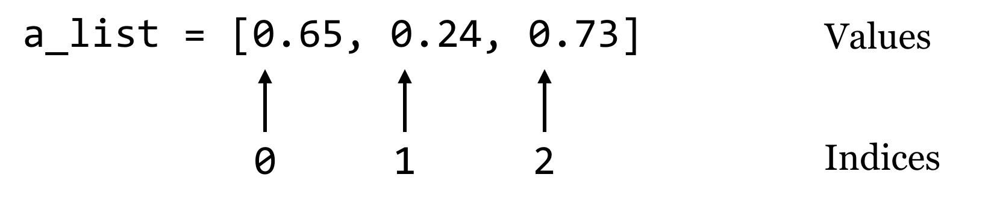
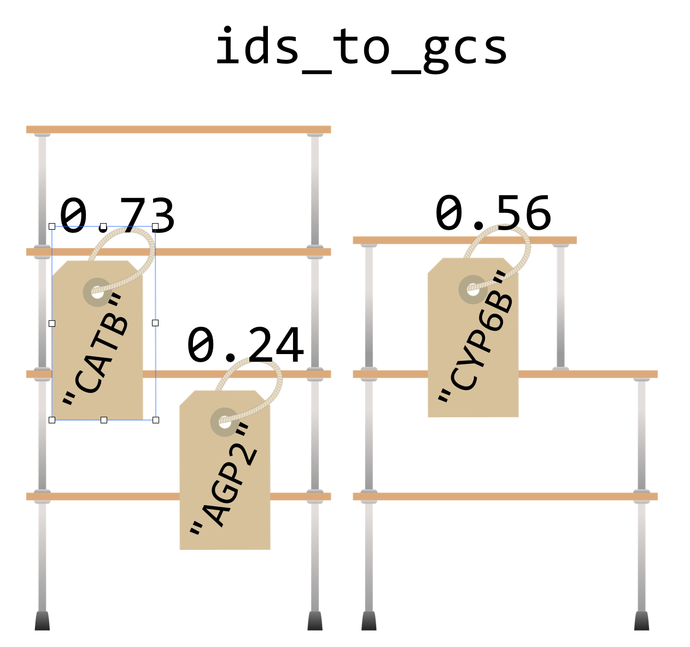

Chapter 22 Dictionaries
Dictionaries (often called “hash tables” in other languages) are an efficient and incredibly useful way to associate data with other data. Consider a list, which associates each data element in the list with an integer starting at zero:

A dictionary works in much the same way, except instead of indices, dictionaries use “keys”, which may be integers or strings.60 We’ll usually draw dictionaries longwise, and include the keys within the illustrating brackets, because they are as much a part of the dictionary structure as the values:
Let’s create a dictionary holding these keys and values with some code, calling it ids_to_gcs. Note that this name encodes both what the keys and values represent, which can be handy when keeping track of the contents of these structures. To create an empty dictionary, we call the dict() function with no parameters, which returns the empty dictionary. Then, we can assign and retrieve values much like we do with lists, except (1) we’ll be using strings as keys instead of integer indices, and (2) we can assign values to keys even if the key is not already present.
ids_to_gcs = dict()
ids_to_gcs["CYP6B"] = 0.56
key = "CATB"
val = 0.73
ids_to_gcs[key] = val
ids_to_gcs["AGP2"] = 0.24
We can then access individual values just like with a list:
val_catb = ids_to_gcs["CATB"]
print(val_catb) # prints 0.73
key_agp2 = "AGP2"
val_agp2 = ids_to_gcs[key_agp2] # holds 0.24
However, we cannot access a value for a key that doesn’t exist. This will result in a KeyError, and the program will halt.
test = ids_to_gcs["TL34_X"] # Error!
Dictionaries go one way only: given the key, we can look up the value, but given a value, we can’t easily find the corresponding key. Also, the name “dictionary” is a bit misleading, because although real dictionaries are sorted in alphabetical order, Python dictionaries have no intrinsic order. Unlike lists, which are ordered and have a first and last element, Python makes no guarantees about how the key/value pairs are stored internally. Also, each unique key can only be present once in the dictionary and associated with one value, though that value might be something complex like a list, or even another dictionary. Perhaps a better analogy would be a set of labeled shelves, where each label can only be used once.

There are a variety of functions and methods that we can use to operate on dictionaries in Python. For example, the len() function will return the number of key/value pairs in a dictionary. For the dictionary above, len(ids_to_gcs) will return 3. If we want, we can get a list of all the keys in a dictionary using its .keys() method, though this list may be in a random order because dictionaries are unordered. We could always sort the list, and loop over that:
ids = ids_to_gcs.keys() # list of keys
ids_sorted = sorted(ids) # sorted version
for idkey in ids_sorted: # for each key
gc = ids_to_gcs[idkey] # get the value
print("id " + idkey + " has GC content " + str(gc))
Similarly, we can get a list of all the values using .values(), again in no particular order. So, ids_to_gcs.values() will return a list of three floats.61
If we try to get a value for a key that isn’t present in the dictionary, we’ll get a KeyError. So, we will usually want to test whether a key is present before attempting to read its value. We can do this using the in keyword.
if "TL34_X" in ids_to_gcs:
tl34x_gc = ids_to_gcs["TL34_X"]
print("TL34_X has GC " + str(tl34x_gc))
else:
print("TL34_X not found in dictionary.")
Counting Gene Ontology Terms
To illustrate the usage of a dictionary in practice, consider the file PZ.annot.txt, the result of annotating a set of assembled transcripts with gene ontology (GO) terms and numbers. Each tab-separated line gives a gene ID, an annotation with a GO number, and a corresponding human-readable term associated with that number.
PZ7180000020811_DVU GO:0003824 GJ12748 [Drosophila virilis]
PZ7180000020752_DVU GO:0003824 GI16375 [Drosophila mojavensis]
PZ7180000034678_DWY GO:0003824 hypothetical protein YpF1991016_1335 [Yersinia pestis biovar Orientalis str. F1991016]
PZ7180000024883_EZN GO:0006548 sjchgc01974 protein
PZ7180000024883_EZN GO:0004252 sjchgc01974 protein
PZ7180000024883_EZN GO:0004500 sjchgc01974 protein
PZ7180000024883_EZN GO:0006508 sjchgc01974 protein
PZ7180000023260_APN GO:0005515 btb poz domain containing protein
...
In this file, each gene may be associated with multiple GO numbers, and each GO number may be associated with multiple genes. Further, each GO term may be associated with multiple different GO numbers. How many times is each ID found in this file? Ideally, we’d like to produce tab-separated output that looks like so:
1 PZ7180000020811_DVU
1 PZ7180000020752_DVU
1 PZ7180000034678_DWY
4 PZ7180000024883_EZN
1 PZ7180000023260_APN
...
Our strategy: To practice some of the command line interaction concepts, we’ll have this program read the file on standard input and write its output to standard output (as discussed in chapter 21, “Command Line Interfacing”). We’ll need to keep a dictionary, where the keys are the gene IDs and the values are the counts. A for-loop will do to read in each line, stripping off the ending newline and splitting the result into a list on the tab character, \t. If the ID is in the dictionary, we’ll add one to the value. Because the dictionary will start empty, we will frequently run into IDs that aren’t already present in the dictionary; in these cases we can set the value to 1. Once we have processed the entire input, we can loop over the dictionary printing each count and ID.
In the code below ([go_id_count.py](data/go_id_count.py)), when the dictionary has the seqid key, we are reading from the dictionary and updating the value (incrementing by 1, in this case). But when the key is not present, we’re adding that new key to the dictionary and initializing the value.
#!/usr/bin/env python
import sys
if(sys.stdin.isatty()):
print("Usage: cat | ./go_id_count.py")
quit()
ids_to_counts = dict()
# Parse input
for line in sys.stdin:
line_list = line.strip().split("\t")
seqid = line_list[0]
if seqid in ids_to_counts: #seqid already seen, update
ids_to_counts[seqid] += 1
else: #new seqid, initialize
ids_to_counts[seqid] = 1
# Print dict contents
for seqid in ids_to_counts:
count = ids_to_counts[seqid]
print(count, seqid, sep="\t")
In the loop that prints the dictionary contents, there is no need to check for the presence of each seqid before reading it to print, because we are simply iterating over each key that exists in the dictionary.
[oneils@mbp ~/apcb/py]$ cat PZ.annot.txt | ./go_id_count.py
2 PZ736262
4 PZ7180000000004_OO
5 PZ7180000000004_OM
3 PZ7180000000004_OJ
2 PZ7180000000021_AX
...
What’s the advantage of organizing our Python program to read rows and columns on standard input and write rows and columns to standard output? Well, if we know the built-in command line tools well enough, we can utilize them along with our program for other analyses. For example, we can first filter the data with grep to select those lines that match the term transcriptase:
[oneils@mbp ~/apcb/py]$ cat PZ.annot.txt | grep 'transcriptase'
The result is only lines containing the word “transcriptase”:
PZ7180000000003_PI GO:0003723 reverse transcriptase
PZ7180000000003_PI GO:0003964 reverse transcriptase
PZ7180000000003_PI GO:0031072 reverse transcriptase
PZ7180000000003_PI GO:0006278 reverse transcriptase
PZ840833_BZS GO:0005488 reverse transcriptase
PZ858982_CAA GO:0005488 reverse transcriptase
PZ858982_CAA GO:0044464 reverse transcriptase
PZ7180000029134_AHQ GO:0003723 reverse transcriptase
PZ7180000029134_AHQ GO:0003964 reverse transcriptase
...
If we then feed those results through our program (cat PZ.annot.txt | grep 'transcriptase' | ./go_id_count.py), we see only counts for IDs among those lines.
4 PZ924_N
4 PZ7180000000089_N
1 PZ840833_BZS
1 PZCAP37180000034572_A
3 PZ7180000029134_AHQ
1 PZ492962
Finally, we could pipe the results through wc to count these lines and determine how many IDs were annotated at least once with that term (21). If we wanted to instead see which eight genes had the most annotations matching “transcriptase”, we could do that, too, by sorting on the counts and using head to print the top eight lines (here we’re breaking up the long command with backslashes, which allow us to continue typing on the next line in the terminal).62
[oneils@mbp ~/apcb/py]$ cat PZ.annot.txt | \
> grep 'transcriptase' | \
> ./go_id_count.py | \
> sort -k1,1nr | \
> head -n 8
7 PZ32722_B
5 PZ7180000000012_DC
4 PZ59_HO
4 PZ7180000000003_PI
4 PZ7180000000089_N
4 PZ924_N
3 PZ578878
3 PZ7180000000012_IL
It appears gene PZ32722_B has been annotated as a transcriptase seven times. This example illustrates that, as we work and build tools, if we consider how they might interact with other tools (even other pieces of code, like functions), we can increase our efficiency remarkably.
Extracting All Lines Matching a Set of IDs
Another useful property of dictionaries is that they are very efficient to search. Suppose we had an unordered list of strings, and we wanted to determine whether a particular string occurred in the list. This can be done, but it would require looking at each element (in a for loop, perhaps) to see if it equaled the one we are searching for. If we instead stored the strings as keys in a dictionary (storing "present", or the number 1, or anything else in the value63), we could use in, which takes a single time step (effectively, on average) no matter how many keys are in the dictionary.64
Returning to the GO/ID list from the last example, suppose that we had the following problem: we wish to first identify all those genes (rows in the table) that were labeled with GO:0001539 (which we can do easily with grep on the command line), and then we wish to extract all rows from the table matching those IDs to get an idea of what other annotations those genes might have.
In essence, we want to print all entries of a file:
PZ7180000020811_DVU GO:0003824 GJ12748 [Drosophila virilis]
PZ7180000020752_DVU GO:0003824 GI16375 [Drosophila mojavensis]
PZ7180000034678_DWY GO:0003824 hypothetical protein YpF1991016_1335 [Yersinia pestis biovar Orientalis str. F1991016]
PZ7180000024883_EZN GO:0006548 sjchgc01974 protein
PZ7180000024883_EZN GO:0004252 sjchgc01974 protein
PZ7180000024883_EZN GO:0004500 sjchgc01974 protein
PZ7180000024883_EZN GO:0006508 sjchgc01974 protein
PZ7180000023260_APN GO:0005515 btb poz domain containing protein
...
Where the first column matches any ID in the first column of another input:
[oneils@mbp ~/apcb/py]$ cat PZ.annot.txt | grep 'GO:0001539'
PZ7180000000028_AP GO:0001539 troponin c 25d
PZ7180000000030_AP GO:0001539 troponin c
PZ7180000000043_AP GO:0001539 troponin c 25d
PZ7180000000044_AP GO:0001539 troponin c 25d
PZ7180000000045_AP GO:0001539 troponin c 25d
PZ7180000000046_AP GO:0001539 troponin c 25d
...
As it turns out, the above problem is common in data analysis (subsetting lines on the basis of an input “query” set), so we’ll be careful to design a program that is not specific to this data set, except that the IDs in question are found in the first column.65
We’ll write a program called match_1st_cols.py that takes two inputs: on standard input, it will read a number of lines that have the query IDs we wish to extract, and it will also take a parameter that specifies the file from which matching lines should be printed. For this instance, we would like to be able to execute our program as follows:
[oneils@mbp ~/apcb/py]$ cat PZ.annot.txt | grep 'GO:0001539' | \
> ./match_1st_cols.py PZ.annot.txt
In terms of code, the program can first read the input from stdin and create a dictionary that has keys corresponding to each ID that we wish to extract (the values can be anything). Next, the program will loop over the lines of the input file (specified in sys.argv[1]), and look up each ID dictionary created previously; if it’s found, the line is printed.
#!/usr/bin/env python
import sys
if sys.stdin.isatty() or len(sys.argv) != 2:
print("Usage: cat | ./match_1st_cols.py ")
print("This script extracts lines from where any entry")
print(" in the the first column of matches the first column")
print(" of ")
quit()
## Build IDs wanted dictionary from standard input
ids_wanted = dict()
for line in sys.stdin:
line_stripped = line.strip()
line_list = line_stripped.split("\t")
id = line_list[0]
ids_wanted[id] = "wanted"
## Loop over the file, print the lines that are wanted
with open(sys.argv[1], "r") as fhandle:
for line in fhandle:
line_stripped = line.strip()
line_list = line_stripped.split("\t")
id = line_list[0]
# Is the ID one of the ones we want?
if id in ids_wanted:
print(line_stripped)
Making the program ([match_1st_cols.py](data/match_1st_cols.py)) executable and running it reveals all annotations for those IDs that are annotated with GO:0001539.
[oneils@mbp ~/apcb/py]$ cat PZ.annot.txt | grep 'GO:0001539' | \
> ./match_1st_cols.py PZ.annot.txt
PZ7180000000028_AP GO:0001539 troponin c 25d
PZ7180000000028_AP GO:0009288 troponin c 25d
PZ7180000000028_AP GO:0005509 troponin c 25d
PZ7180000000030_AP GO:0001539 troponin c
PZ7180000000030_AP GO:0009288 troponin c
PZ7180000000030_AP GO:0005509 troponin c
PZ7180000000043_AP GO:0001539 troponin c 25d
PZ7180000000043_AP GO:0009288 troponin c 25d
...
As before, we can use this strategy to easily extract all the lines matching a variety of criteria, just by modifying one or both inputs. Given any list of gene IDs of interest from a collaborator, for example, we could use that on the standard input and extract the corresponding lines from the GO file.
Exercises
Dictionaries are often used for simple lookups. For example, a dictionary might have keys for all three base-pair DNA sequences (
"TGG","GCC","TAG", and so on) whose values correspond to amino acid codes (correspondingly,"W","A","*"for “stop,” and so on). The full table can be found on the web by searching for “amino acid codon table.”Write a function called
codon_to_aa()that takes in a single three-base-pair string and returns a one-character string with the corresponding amino acid code, by looking up the codon in a dicti0onary. You may need to define all 64 possibilities, so be careful not to make any typos! If the input is not a valid three-base-pair DNA string, the function should return"X"to signify “unknown.” Test your function with a few calls likeprint(codon_to_aa("TGG")),print(codon_to_aa("TAA")), andprint(codon_to_aa("BOB")).Combine the result of the
codon_to_aa()function above with theget_windows()function from the exercises in chapter 20, “Python Functions” to produce adna_to_aa()function. Given a string like"AAACTGTCTCTA", the function should return its translation as"KLSL".Use the
get_windows()function to write acount_kmers()function; it should take two parameters (a DNA sequence and an integer) and return a dictionary of k-mers and the count of those k-mers. For example,count_kmers("AAACTGTCTCTA", 3)should return a dictionary with keys"AAA","AAC","ACT","CTG","TGT","GTC","TCT","CTC","CTA"and corresponding values1,1,1,1,1,1,2,1,1. (K-mer counting is an important step in many bioinformatics algorithms, including genome assembly.)Create a function
union_dictionaries()that takes two dictionaries as parameters returns their “union” as a dictionary — when a key is found in both, the larger value should be used in the output. If dictionarydict_amaps"A","B","C"to3,2,6, anddict_bmaps"B","C","D"to7,4,1, for example, the output should map"A","B","C","D"to3,7,6,1.
Dictionary keys may be any immutable type, which includes integers and strings, but they also include a number of other more exotic types, like tuples (immutable lists). Although floats are also immutable, because keys are looked up on the basis of equality and rounding errors can compound, it is generally not recommended to use them as dictionary keys.↩︎
In Python 3.0 and later, what is returned by
.keys()and.values()is not technically a list but a “view”, which operates similarly to a list without using any additional memory. The code shown still works, butids.sort()(the sort-in-place version) would not, as views do not have a.sort()method.↩︎For simple problems like this, if we know the command line tools well enough, we don’t even need to use Python. This version of the problem can be solved with a pipeline like
cat PZ.annot.txt | grep 'transcriptase' | awk '{print $1}' | sort | uniq -c | sort -k1,1nr | head.↩︎In practice, if we don’t have a value we’re interested in storing, we should use a set instead of a dictionary.↩︎
In computer science terms, we say that searching an unordered list runs in time \(O(n)\), or “big \(O\) of \(n\)” where \(n\) is the size of the list. Looking up a dictionary key using
in, is \(O(1)\) (for the average case), which is to say that the time taken is independent of the size of the dictionary. If we need to do such a search many times, these differences can add up significantly. More information on run-time considerations is covered in chapter 27, “Algorithms and Data Structures”.↩︎The
greputility can perform a similar operation;grep -f query_patterns.txt subject_file.txtwill print all lines insubject_file.txtthat are matched by any of the patterns inquery_patterns.txt. But this requires that all patterns are compared to all lines (even if the patterns are simple), and so our custom Python solution is much faster when the number of queries is large (because dictionary key lookup is so fast).↩︎